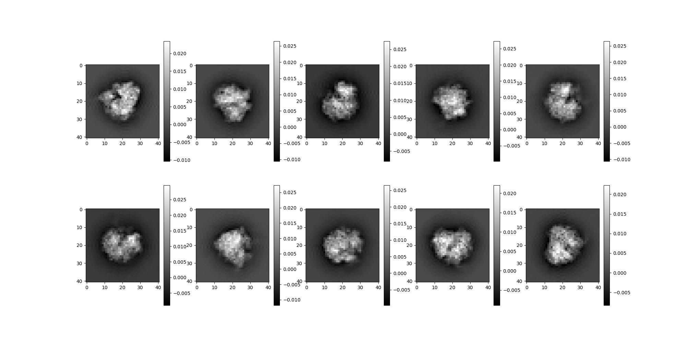
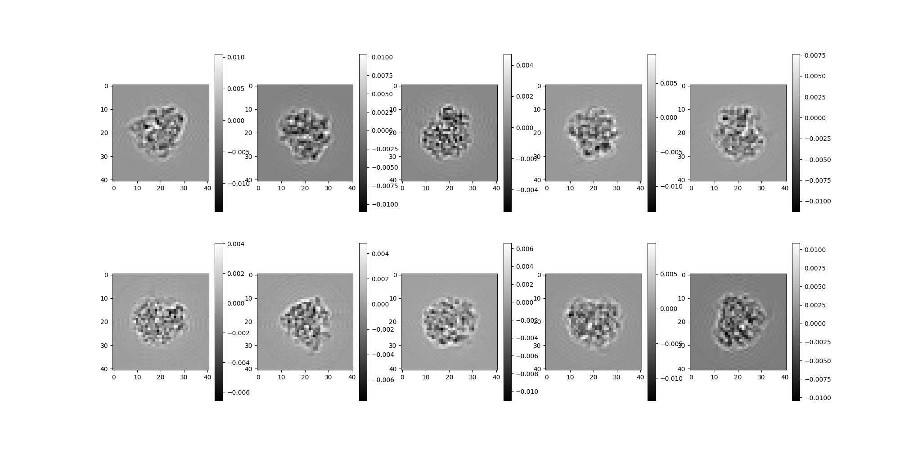
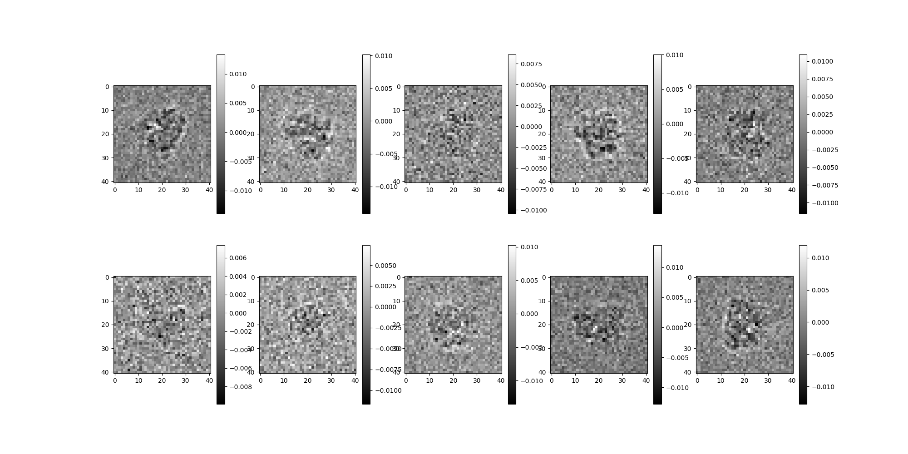
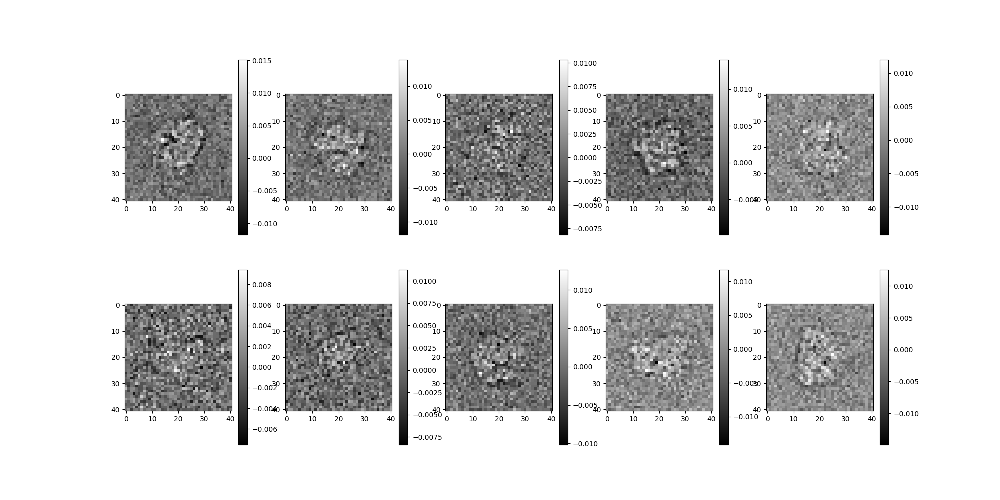
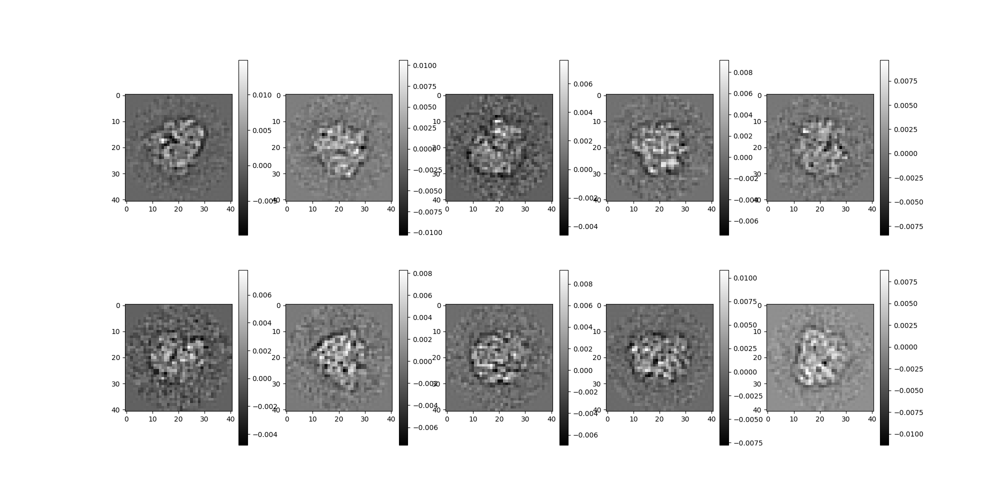
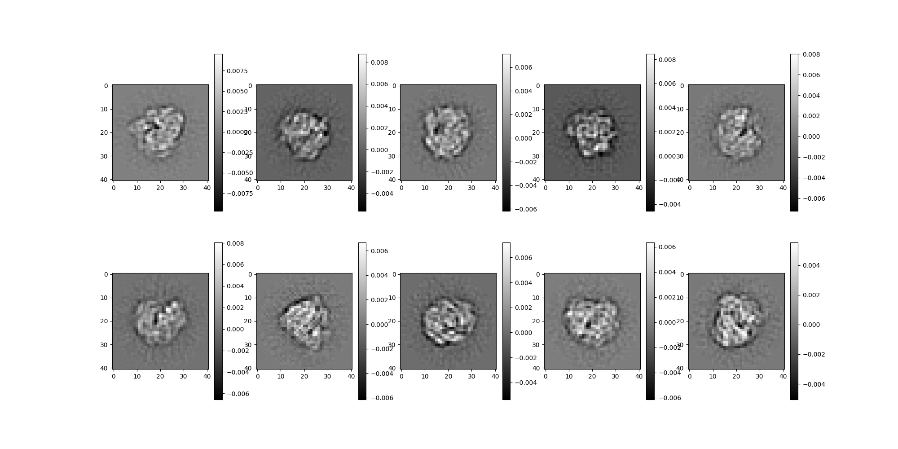

Note
Go to the end to download the full example code.
Ab-initio Pipeline Demonstration¶
This tutorial demonstrates some key components of an ab-initio
reconstruction pipeline using synthetic data generated with ASPIRE’s
Simulation class of objects.
Download an Example Volume¶
We begin by downloading a high resolution volume map of the 80S Ribosome, sourced from EMDB: https://www.ebi.ac.uk/emdb/EMD-2660. This is one of several volume maps that can be downloaded with ASPIRE’s data downloading utility by using the following import. sphinx_gallery_start_ignore flake8: noqa sphinx_gallery_end_ignore
from aspire.downloader import emdb_2660
# Load 80s Ribosome as a ``Volume`` object.
original_vol = emdb_2660()
# Downsample the volume
res = 41
vol = original_vol.downsample(res)
Note
A Volume can be saved using the Volume.save() method as follows:
fn = f"downsampled_80s_ribosome_size{res}.mrc"
vol.save(fn, overwrite=True)
Create a Simulation Source¶
ASPIRE’s Simulation class can be used to generate a synthetic
dataset of projection images. A Simulation object produces
random projections of a supplied Volume and applies noise and CTF
filters. The resulting stack of 2D images is stored in an Image
object.
CTF Filters¶
Let’s start by creating CTF filters. The operators package
contains a collection of filter classes that can be supplied to a
Simulation. We use RadialCTFFilter to generate a set of CTF
filters with various defocus values.
# Create CTF filters
import numpy as np
from aspire.operators import RadialCTFFilter
# Radial CTF Filter
defocus_min = 15000 # unit is angstroms
defocus_max = 25000
defocus_ct = 7
ctf_filters = [
RadialCTFFilter(pixel_size=vol.pixel_size, defocus=d)
for d in np.linspace(defocus_min, defocus_max, defocus_ct)
]
Initialize Simulation Object¶
We feed our Volume and filters into Simulation to generate
the dataset of images. When controlled white Gaussian noise is
desired, WhiteNoiseAdder.from_snr() can be used to generate a
simulation data set around a specific SNR.
Alternatively, users can bring their own images using an
ArrayImageSource, or define their own custom noise functions via
Simulation(..., noise_adder=CustomNoiseAdder(...)). Examples
can be found in tutorials/class_averaging.py and
experiments/simulated_abinitio_pipeline.py.
from aspire.noise import WhiteNoiseAdder
from aspire.source import Simulation
# set parameters
n_imgs = 2500
# SNR target for white gaussian noise.
snr = 0.5
Note
Note, the SNR value was chosen based on other parameters for this quick tutorial, and can be changed to adjust the power of the additive noise.
# For this ``Simulation`` we set all 2D offset vectors to zero,
# but by default offset vectors will be randomly distributed.
src = Simulation(
n=n_imgs, # number of projections
vols=vol, # volume source
offsets=0, # Default: images are randomly shifted
unique_filters=ctf_filters,
noise_adder=WhiteNoiseAdder.from_snr(snr=snr), # desired SNR
)
0%| | 0/5 [00:00<?, ?it/s]
20%|██ | 1/5 [00:00<00:00, 4.57it/s]
40%|████ | 2/5 [00:00<00:00, 4.66it/s]
60%|██████ | 3/5 [00:00<00:00, 4.65it/s]
80%|████████ | 4/5 [00:00<00:00, 4.66it/s]
100%|██████████| 5/5 [00:01<00:00, 4.87it/s]
100%|██████████| 5/5 [00:01<00:00, 4.76it/s]
Several Views of the Projection Images¶
We can access several views of the projection images.
# with no corruption applied
src.projections[0:10].show()

# with no noise corruption
src.clean_images[0:10].show()

# with noise and CTF corruption
src.images[0:10].show()

CTF Correction¶
We apply phase_flip() to correct for CTF effects.
src = src.phase_flip()
Cache¶
We apply cache to store the results of the ImageSource
pipeline up to this point. This is optional, but can provide
benefit when used intently on machines with adequate memory.
src = src.cache()
src.images[0:10].show()

0%| | 0/5 [00:00<?, ?it/s]
20%|██ | 1/5 [00:00<00:03, 1.14it/s]
40%|████ | 2/5 [00:01<00:02, 1.14it/s]
60%|██████ | 3/5 [00:02<00:01, 1.15it/s]
80%|████████ | 4/5 [00:03<00:00, 1.14it/s]
100%|██████████| 5/5 [00:04<00:00, 1.19it/s]
100%|██████████| 5/5 [00:04<00:00, 1.17it/s]
Class Averaging¶
We use RIRClass2D object to classify the images via the
rotationally invariant representation (RIR) algorithm. Class
selection is customizable. The classification module also includes a
set of protocols for selecting a set of images to be used after
classification. Here we’re using the simplest
DebugClassAvgSource which internally uses the
TopClassSelector to select the first n_classes images from
the source. In practice, the selection is done by sorting class
averages based on some configurable notion of quality (contrast,
neighbor distance etc).
from aspire.classification import RIRClass2D
# set parameters
n_classes = 200
n_nbor = 6
# We will customize our class averaging source. Note that the
# ``fspca_components`` and ``bispectrum_components`` were selected for
# this small tutorial.
rir = RIRClass2D(
src,
fspca_components=40,
bispectrum_components=30,
n_nbor=n_nbor,
)
from aspire.denoising import DebugClassAvgSource
avgs = DebugClassAvgSource(
src=src,
classifier=rir,
)
# We'll continue our pipeline using only the first ``n_classes`` from
# ``avgs``. The ``cache()`` call is used here to precompute results
# for the ``:n_classes`` slice. This avoids recomputing the same
# images twice when peeking in the next cell then requesting them in
# the following ``CLSyncVoting`` algorithm. Outside of demonstration
# purposes, where we are repeatedly peeking at various stage results,
# such caching can be dropped allowing for more lazy evaluation.
avgs = avgs[:n_classes].cache()
0%| | 0/1 [00:00<?, ?it/s]
0%| | 0/5 [00:00<?, ?it/s]
100%|██████████| 5/5 [00:00<00:00, 771.04it/s]
0%| | 0/5 [00:00<?, ?it/s]
20%|██ | 1/5 [00:00<00:00, 6.15it/s]
40%|████ | 2/5 [00:00<00:00, 6.24it/s]
60%|██████ | 3/5 [00:00<00:00, 6.27it/s]
80%|████████ | 4/5 [00:00<00:00, 5.98it/s]
100%|██████████| 5/5 [00:00<00:00, 6.29it/s]
100%|██████████| 5/5 [00:00<00:00, 6.22it/s]
Rotationally aligning classes: 0%| | 0/200 [00:00<?, ?it/s]
Rotationally aligning classes: 1%| | 2/200 [00:00<00:12, 16.18it/s]
Rotationally aligning classes: 2%|▏ | 4/200 [00:00<00:18, 10.47it/s]
Rotationally aligning classes: 3%|▎ | 6/200 [00:00<00:20, 9.40it/s]
Rotationally aligning classes: 4%|▍ | 8/200 [00:00<00:18, 10.27it/s]
Rotationally aligning classes: 5%|▌ | 10/200 [00:00<00:19, 9.97it/s]
Rotationally aligning classes: 6%|▌ | 12/200 [00:01<00:20, 9.30it/s]
Rotationally aligning classes: 6%|▋ | 13/200 [00:01<00:20, 9.14it/s]
Rotationally aligning classes: 7%|▋ | 14/200 [00:01<00:20, 8.95it/s]
Rotationally aligning classes: 8%|▊ | 15/200 [00:01<00:21, 8.76it/s]
Rotationally aligning classes: 8%|▊ | 16/200 [00:01<00:21, 8.59it/s]
Rotationally aligning classes: 8%|▊ | 17/200 [00:01<00:21, 8.66it/s]
Rotationally aligning classes: 9%|▉ | 18/200 [00:01<00:21, 8.55it/s]
Rotationally aligning classes: 10%|▉ | 19/200 [00:02<00:21, 8.59it/s]
Rotationally aligning classes: 10%|█ | 20/200 [00:02<00:21, 8.49it/s]
Rotationally aligning classes: 10%|█ | 21/200 [00:02<00:21, 8.39it/s]
Rotationally aligning classes: 11%|█ | 22/200 [00:02<00:21, 8.36it/s]
Rotationally aligning classes: 12%|█▏ | 23/200 [00:02<00:21, 8.27it/s]
Rotationally aligning classes: 12%|█▎ | 25/200 [00:02<00:16, 10.30it/s]
Rotationally aligning classes: 14%|█▎ | 27/200 [00:02<00:18, 9.53it/s]
Rotationally aligning classes: 14%|█▍ | 28/200 [00:03<00:18, 9.20it/s]
Rotationally aligning classes: 15%|█▌ | 30/200 [00:03<00:16, 10.17it/s]
Rotationally aligning classes: 16%|█▌ | 32/200 [00:03<00:17, 9.45it/s]
Rotationally aligning classes: 17%|█▋ | 34/200 [00:03<00:17, 9.65it/s]
Rotationally aligning classes: 18%|█▊ | 35/200 [00:03<00:17, 9.31it/s]
Rotationally aligning classes: 18%|█▊ | 36/200 [00:03<00:18, 9.05it/s]
Rotationally aligning classes: 18%|█▊ | 37/200 [00:04<00:18, 8.87it/s]
Rotationally aligning classes: 20%|█▉ | 39/200 [00:04<00:16, 9.83it/s]
Rotationally aligning classes: 20%|██ | 40/200 [00:04<00:16, 9.54it/s]
Rotationally aligning classes: 20%|██ | 41/200 [00:04<00:17, 9.21it/s]
Rotationally aligning classes: 21%|██ | 42/200 [00:04<00:17, 8.81it/s]
Rotationally aligning classes: 22%|██▏ | 43/200 [00:04<00:18, 8.64it/s]
Rotationally aligning classes: 22%|██▏ | 44/200 [00:04<00:18, 8.63it/s]
Rotationally aligning classes: 22%|██▎ | 45/200 [00:04<00:18, 8.59it/s]
Rotationally aligning classes: 23%|██▎ | 46/200 [00:05<00:18, 8.37it/s]
Rotationally aligning classes: 24%|██▎ | 47/200 [00:05<00:18, 8.38it/s]
Rotationally aligning classes: 24%|██▍ | 48/200 [00:05<00:18, 8.39it/s]
Rotationally aligning classes: 24%|██▍ | 49/200 [00:05<00:18, 8.35it/s]
Rotationally aligning classes: 25%|██▌ | 50/200 [00:05<00:18, 8.28it/s]
Rotationally aligning classes: 26%|██▌ | 51/200 [00:05<00:18, 8.10it/s]
Rotationally aligning classes: 26%|██▌ | 52/200 [00:05<00:18, 8.11it/s]
Rotationally aligning classes: 26%|██▋ | 53/200 [00:05<00:17, 8.27it/s]
Rotationally aligning classes: 27%|██▋ | 54/200 [00:05<00:17, 8.37it/s]
Rotationally aligning classes: 28%|██▊ | 55/200 [00:06<00:17, 8.39it/s]
Rotationally aligning classes: 28%|██▊ | 56/200 [00:06<00:17, 8.38it/s]
Rotationally aligning classes: 28%|██▊ | 57/200 [00:06<00:16, 8.46it/s]
Rotationally aligning classes: 30%|██▉ | 59/200 [00:06<00:15, 9.11it/s]
Rotationally aligning classes: 30%|███ | 60/200 [00:06<00:15, 8.86it/s]
Rotationally aligning classes: 30%|███ | 61/200 [00:06<00:16, 8.57it/s]
Rotationally aligning classes: 31%|███ | 62/200 [00:06<00:15, 8.68it/s]
Rotationally aligning classes: 32%|███▏ | 63/200 [00:07<00:16, 8.54it/s]
Rotationally aligning classes: 32%|███▏ | 64/200 [00:07<00:15, 8.51it/s]
Rotationally aligning classes: 33%|███▎ | 66/200 [00:07<00:13, 9.95it/s]
Rotationally aligning classes: 34%|███▎ | 67/200 [00:07<00:14, 9.41it/s]
Rotationally aligning classes: 34%|███▍ | 68/200 [00:07<00:14, 9.00it/s]
Rotationally aligning classes: 34%|███▍ | 69/200 [00:07<00:14, 8.89it/s]
Rotationally aligning classes: 35%|███▌ | 70/200 [00:07<00:14, 8.87it/s]
Rotationally aligning classes: 36%|███▌ | 71/200 [00:07<00:14, 8.68it/s]
Rotationally aligning classes: 36%|███▌ | 72/200 [00:08<00:14, 8.68it/s]
Rotationally aligning classes: 36%|███▋ | 73/200 [00:08<00:14, 8.62it/s]
Rotationally aligning classes: 37%|███▋ | 74/200 [00:08<00:14, 8.49it/s]
Rotationally aligning classes: 38%|███▊ | 75/200 [00:08<00:14, 8.36it/s]
Rotationally aligning classes: 38%|███▊ | 76/200 [00:08<00:14, 8.37it/s]
Rotationally aligning classes: 38%|███▊ | 77/200 [00:08<00:14, 8.35it/s]
Rotationally aligning classes: 39%|███▉ | 78/200 [00:08<00:14, 8.28it/s]
Rotationally aligning classes: 40%|████ | 80/200 [00:08<00:12, 9.43it/s]
Rotationally aligning classes: 40%|████ | 81/200 [00:09<00:13, 9.06it/s]
Rotationally aligning classes: 41%|████ | 82/200 [00:09<00:13, 8.78it/s]
Rotationally aligning classes: 42%|████▏ | 83/200 [00:09<00:13, 8.61it/s]
Rotationally aligning classes: 42%|████▏ | 84/200 [00:09<00:13, 8.80it/s]
Rotationally aligning classes: 42%|████▎ | 85/200 [00:09<00:13, 8.62it/s]
Rotationally aligning classes: 43%|████▎ | 86/200 [00:09<00:13, 8.53it/s]
Rotationally aligning classes: 44%|████▎ | 87/200 [00:09<00:13, 8.43it/s]
Rotationally aligning classes: 44%|████▍ | 88/200 [00:09<00:13, 8.32it/s]
Rotationally aligning classes: 44%|████▍ | 89/200 [00:10<00:13, 8.23it/s]
Rotationally aligning classes: 45%|████▌ | 90/200 [00:10<00:13, 8.28it/s]
Rotationally aligning classes: 46%|████▌ | 91/200 [00:10<00:13, 8.33it/s]
Rotationally aligning classes: 46%|████▌ | 92/200 [00:10<00:13, 8.30it/s]
Rotationally aligning classes: 46%|████▋ | 93/200 [00:10<00:12, 8.26it/s]
Rotationally aligning classes: 47%|████▋ | 94/200 [00:10<00:12, 8.26it/s]
Rotationally aligning classes: 48%|████▊ | 95/200 [00:10<00:12, 8.23it/s]
Rotationally aligning classes: 48%|████▊ | 96/200 [00:10<00:12, 8.20it/s]
Rotationally aligning classes: 48%|████▊ | 97/200 [00:10<00:12, 8.36it/s]
Rotationally aligning classes: 50%|████▉ | 99/200 [00:11<00:11, 8.78it/s]
Rotationally aligning classes: 50%|█████ | 100/200 [00:11<00:11, 8.69it/s]
Rotationally aligning classes: 50%|█████ | 101/200 [00:11<00:11, 8.66it/s]
Rotationally aligning classes: 51%|█████ | 102/200 [00:11<00:11, 8.52it/s]
Rotationally aligning classes: 52%|█████▏ | 103/200 [00:11<00:11, 8.47it/s]
Rotationally aligning classes: 52%|█████▏ | 104/200 [00:11<00:11, 8.39it/s]
Rotationally aligning classes: 52%|█████▎ | 105/200 [00:11<00:11, 8.33it/s]
Rotationally aligning classes: 53%|█████▎ | 106/200 [00:12<00:11, 8.28it/s]
Rotationally aligning classes: 54%|█████▎ | 107/200 [00:12<00:11, 8.28it/s]
Rotationally aligning classes: 54%|█████▍ | 108/200 [00:12<00:11, 8.23it/s]
Rotationally aligning classes: 55%|█████▍ | 109/200 [00:12<00:11, 8.25it/s]
Rotationally aligning classes: 55%|█████▌ | 110/200 [00:12<00:10, 8.26it/s]
Rotationally aligning classes: 56%|█████▌ | 111/200 [00:12<00:10, 8.23it/s]
Rotationally aligning classes: 56%|█████▌ | 112/200 [00:12<00:10, 8.29it/s]
Rotationally aligning classes: 56%|█████▋ | 113/200 [00:12<00:10, 8.26it/s]
Rotationally aligning classes: 57%|█████▋ | 114/200 [00:12<00:10, 8.41it/s]
Rotationally aligning classes: 57%|█████▊ | 115/200 [00:13<00:10, 8.41it/s]
Rotationally aligning classes: 58%|█████▊ | 116/200 [00:13<00:10, 8.35it/s]
Rotationally aligning classes: 58%|█████▊ | 117/200 [00:13<00:09, 8.44it/s]
Rotationally aligning classes: 60%|█████▉ | 119/200 [00:13<00:08, 9.94it/s]
Rotationally aligning classes: 60%|██████ | 120/200 [00:13<00:08, 9.51it/s]
Rotationally aligning classes: 60%|██████ | 121/200 [00:13<00:08, 9.55it/s]
Rotationally aligning classes: 61%|██████ | 122/200 [00:13<00:08, 9.18it/s]
Rotationally aligning classes: 62%|██████▏ | 123/200 [00:13<00:08, 8.92it/s]
Rotationally aligning classes: 62%|██████▏ | 124/200 [00:14<00:08, 8.73it/s]
Rotationally aligning classes: 62%|██████▎ | 125/200 [00:14<00:08, 8.56it/s]
Rotationally aligning classes: 63%|██████▎ | 126/200 [00:14<00:08, 8.51it/s]
Rotationally aligning classes: 64%|██████▎ | 127/200 [00:14<00:08, 8.45it/s]
Rotationally aligning classes: 64%|██████▍ | 128/200 [00:14<00:08, 8.37it/s]
Rotationally aligning classes: 64%|██████▍ | 129/200 [00:14<00:08, 8.30it/s]
Rotationally aligning classes: 65%|██████▌ | 130/200 [00:14<00:08, 8.31it/s]
Rotationally aligning classes: 66%|██████▌ | 131/200 [00:14<00:08, 8.30it/s]
Rotationally aligning classes: 66%|██████▋ | 133/200 [00:15<00:07, 9.08it/s]
Rotationally aligning classes: 67%|██████▋ | 134/200 [00:15<00:07, 8.86it/s]
Rotationally aligning classes: 68%|██████▊ | 135/200 [00:15<00:07, 8.74it/s]
Rotationally aligning classes: 68%|██████▊ | 137/200 [00:15<00:07, 8.85it/s]
Rotationally aligning classes: 69%|██████▉ | 138/200 [00:15<00:07, 8.73it/s]
Rotationally aligning classes: 70%|██████▉ | 139/200 [00:15<00:07, 8.42it/s]
Rotationally aligning classes: 70%|███████ | 140/200 [00:15<00:07, 8.25it/s]
Rotationally aligning classes: 70%|███████ | 141/200 [00:16<00:07, 8.22it/s]
Rotationally aligning classes: 71%|███████ | 142/200 [00:16<00:07, 8.21it/s]
Rotationally aligning classes: 72%|███████▏ | 143/200 [00:16<00:06, 8.32it/s]
Rotationally aligning classes: 72%|███████▎ | 145/200 [00:16<00:06, 8.59it/s]
Rotationally aligning classes: 73%|███████▎ | 146/200 [00:16<00:06, 8.44it/s]
Rotationally aligning classes: 74%|███████▎ | 147/200 [00:16<00:06, 8.48it/s]
Rotationally aligning classes: 74%|███████▍ | 149/200 [00:16<00:05, 9.80it/s]
Rotationally aligning classes: 75%|███████▌ | 150/200 [00:17<00:05, 9.72it/s]
Rotationally aligning classes: 76%|███████▌ | 151/200 [00:17<00:05, 9.27it/s]
Rotationally aligning classes: 76%|███████▌ | 152/200 [00:17<00:05, 9.19it/s]
Rotationally aligning classes: 76%|███████▋ | 153/200 [00:17<00:05, 8.89it/s]
Rotationally aligning classes: 77%|███████▋ | 154/200 [00:17<00:05, 9.11it/s]
Rotationally aligning classes: 78%|███████▊ | 155/200 [00:17<00:05, 8.77it/s]
Rotationally aligning classes: 78%|███████▊ | 156/200 [00:17<00:05, 8.57it/s]
Rotationally aligning classes: 78%|███████▊ | 157/200 [00:17<00:04, 8.63it/s]
Rotationally aligning classes: 79%|███████▉ | 158/200 [00:18<00:04, 8.51it/s]
Rotationally aligning classes: 80%|███████▉ | 159/200 [00:18<00:04, 8.45it/s]
Rotationally aligning classes: 81%|████████ | 162/200 [00:18<00:03, 11.68it/s]
Rotationally aligning classes: 82%|████████▏ | 164/200 [00:18<00:03, 11.00it/s]
Rotationally aligning classes: 83%|████████▎ | 166/200 [00:18<00:03, 9.96it/s]
Rotationally aligning classes: 84%|████████▎ | 167/200 [00:18<00:03, 9.55it/s]
Rotationally aligning classes: 84%|████████▍ | 168/200 [00:18<00:03, 9.44it/s]
Rotationally aligning classes: 84%|████████▍ | 169/200 [00:19<00:03, 9.18it/s]
Rotationally aligning classes: 85%|████████▌ | 170/200 [00:19<00:03, 9.00it/s]
Rotationally aligning classes: 86%|████████▌ | 171/200 [00:19<00:03, 8.79it/s]
Rotationally aligning classes: 86%|████████▋ | 173/200 [00:19<00:02, 9.52it/s]
Rotationally aligning classes: 87%|████████▋ | 174/200 [00:19<00:02, 9.19it/s]
Rotationally aligning classes: 88%|████████▊ | 175/200 [00:19<00:02, 8.90it/s]
Rotationally aligning classes: 88%|████████▊ | 177/200 [00:19<00:02, 9.10it/s]
Rotationally aligning classes: 89%|████████▉ | 178/200 [00:20<00:02, 8.92it/s]
Rotationally aligning classes: 90%|████████▉ | 179/200 [00:20<00:02, 8.72it/s]
Rotationally aligning classes: 90%|█████████ | 180/200 [00:20<00:02, 8.60it/s]
Rotationally aligning classes: 90%|█████████ | 181/200 [00:20<00:02, 8.50it/s]
Rotationally aligning classes: 91%|█████████ | 182/200 [00:20<00:02, 8.39it/s]
Rotationally aligning classes: 92%|█████████▏| 183/200 [00:20<00:02, 8.45it/s]
Rotationally aligning classes: 92%|█████████▏| 184/200 [00:20<00:01, 8.41it/s]
Rotationally aligning classes: 92%|█████████▎| 185/200 [00:20<00:01, 8.30it/s]
Rotationally aligning classes: 93%|█████████▎| 186/200 [00:21<00:01, 8.27it/s]
Rotationally aligning classes: 94%|█████████▎| 187/200 [00:21<00:01, 8.39it/s]
Rotationally aligning classes: 94%|█████████▍| 189/200 [00:21<00:01, 10.06it/s]
Rotationally aligning classes: 95%|█████████▌| 190/200 [00:21<00:01, 9.97it/s]
Rotationally aligning classes: 96%|█████████▌| 191/200 [00:21<00:00, 9.51it/s]
Rotationally aligning classes: 96%|█████████▌| 192/200 [00:21<00:00, 9.44it/s]
Rotationally aligning classes: 96%|█████████▋| 193/200 [00:21<00:00, 9.12it/s]
Rotationally aligning classes: 97%|█████████▋| 194/200 [00:21<00:00, 8.87it/s]
Rotationally aligning classes: 98%|█████████▊| 195/200 [00:22<00:00, 8.71it/s]
Rotationally aligning classes: 98%|█████████▊| 196/200 [00:22<00:00, 8.56it/s]
Rotationally aligning classes: 98%|█████████▊| 197/200 [00:22<00:00, 8.49it/s]
Rotationally aligning classes: 99%|█████████▉| 198/200 [00:22<00:00, 8.39it/s]
Rotationally aligning classes: 100%|█████████▉| 199/200 [00:22<00:00, 8.26it/s]
Rotationally aligning classes: 100%|██████████| 200/200 [00:22<00:00, 8.84it/s]
Stacking and evaluating class averages from FFBBasis2D to Cartesian: 0%| | 0/1 [00:00<?, ?it/s]
Stacking batch: 0%| | 0/200 [00:00<?, ?it/s]
Stacking batch: 1%| | 2/200 [00:00<00:11, 17.88it/s]
Stacking batch: 10%|█ | 21/200 [00:00<00:01, 113.86it/s]
Stacking batch: 20%|██ | 41/200 [00:00<00:01, 148.91it/s]
Stacking batch: 30%|███ | 61/200 [00:00<00:00, 165.80it/s]
Stacking batch: 40%|████ | 81/200 [00:00<00:00, 175.32it/s]
Stacking batch: 50%|████▉ | 99/200 [00:00<00:00, 176.46it/s]
Stacking batch: 59%|█████▉ | 118/200 [00:00<00:00, 180.73it/s]
Stacking batch: 68%|██████▊ | 137/200 [00:00<00:00, 183.61it/s]
Stacking batch: 78%|███████▊ | 156/200 [00:00<00:00, 185.52it/s]
Stacking batch: 88%|████████▊ | 175/200 [00:01<00:00, 186.70it/s]
Stacking batch: 97%|█████████▋| 194/200 [00:01<00:00, 187.66it/s]
Stacking and evaluating class averages from FFBBasis2D to Cartesian: 100%|██████████| 1/1 [00:01<00:00, 1.30s/it]
Stacking and evaluating class averages from FFBBasis2D to Cartesian: 100%|██████████| 1/1 [00:01<00:00, 1.30s/it]
100%|██████████| 1/1 [00:28<00:00, 28.29s/it]
100%|██████████| 1/1 [00:28<00:00, 28.29s/it]
View the Class Averages¶
# Show class averages
avgs.images[0:10].show()

# Show original images corresponding to those classes. This 1:1
# comparison is only expected to work because we used
# ``TopClassSelector`` to classify our images.
src.images[0:10].show()

Orientation Estimation¶
We create an OrientedSource, which consumes an ImageSource object, an
orientation estimator, and returns a new source which lazily estimates orientations.
In this case we supply avgs for our source and a CLSyncVoting
class instance for our orientation estimator. The CLSyncVoting algorithm employs
a common-lines method with synchronization and voting.
from aspire.abinitio import CLSyncVoting
from aspire.source import OrientedSource
# Stash true rotations for later comparison
true_rotations = src.rotations[:n_classes]
# For this low resolution example we will customize the ``CLSyncVoting``
# instance to use fewer theta points ``n_theta`` then the default value of 360.
orient_est = CLSyncVoting(avgs, n_theta=72)
# Instantiate an ``OrientedSource``.
oriented_src = OrientedSource(avgs, orient_est)
Mean Error of Estimated Rotations¶
ASPIRE has the built-in utility function, mean_aligned_angular_distance, which globally
aligns the estimated rotations to the true rotations and computes the mean
angular distance (in degrees).
from aspire.utils import mean_aligned_angular_distance
# Compare with known true rotations
mean_ang_dist = mean_aligned_angular_distance(oriented_src.rotations, true_rotations)
print(f"Mean aligned angular distance: {mean_ang_dist} degrees")
Searching over common line pairs: 0%| | 0/19900 [00:00<?, ?it/s]
Searching over common line pairs: 2%|▏ | 321/19900 [00:00<00:06, 3202.89it/s]
Searching over common line pairs: 3%|▎ | 647/19900 [00:00<00:05, 3236.40it/s]
Searching over common line pairs: 5%|▍ | 974/19900 [00:00<00:05, 3247.79it/s]
Searching over common line pairs: 7%|▋ | 1300/19900 [00:00<00:05, 3249.10it/s]
Searching over common line pairs: 8%|▊ | 1626/19900 [00:00<00:05, 3252.65it/s]
Searching over common line pairs: 10%|▉ | 1952/19900 [00:00<00:05, 3253.19it/s]
Searching over common line pairs: 11%|█▏ | 2279/19900 [00:00<00:05, 3256.59it/s]
Searching over common line pairs: 13%|█▎ | 2606/19900 [00:00<00:05, 3259.46it/s]
Searching over common line pairs: 15%|█▍ | 2932/19900 [00:00<00:05, 3258.68it/s]
Searching over common line pairs: 16%|█▋ | 3260/19900 [00:01<00:05, 3262.73it/s]
Searching over common line pairs: 18%|█▊ | 3587/19900 [00:01<00:05, 3260.22it/s]
Searching over common line pairs: 20%|█▉ | 3914/19900 [00:01<00:04, 3259.61it/s]
Searching over common line pairs: 21%|██▏ | 4241/19900 [00:01<00:04, 3260.01it/s]
Searching over common line pairs: 23%|██▎ | 4570/19900 [00:01<00:04, 3266.33it/s]
Searching over common line pairs: 25%|██▍ | 4898/19900 [00:01<00:04, 3268.62it/s]
Searching over common line pairs: 26%|██▋ | 5225/19900 [00:01<00:04, 3266.77it/s]
Searching over common line pairs: 28%|██▊ | 5552/19900 [00:01<00:04, 3263.31it/s]
Searching over common line pairs: 30%|██▉ | 5880/19900 [00:01<00:04, 3267.30it/s]
Searching over common line pairs: 31%|███ | 6207/19900 [00:01<00:04, 3266.35it/s]
Searching over common line pairs: 33%|███▎ | 6534/19900 [00:02<00:04, 3267.18it/s]
Searching over common line pairs: 34%|███▍ | 6861/19900 [00:02<00:03, 3265.73it/s]
Searching over common line pairs: 36%|███▌ | 7188/19900 [00:02<00:03, 3266.02it/s]
Searching over common line pairs: 38%|███▊ | 7515/19900 [00:02<00:03, 3262.77it/s]
Searching over common line pairs: 39%|███▉ | 7843/19900 [00:02<00:03, 3265.77it/s]
Searching over common line pairs: 41%|████ | 8170/19900 [00:02<00:03, 3252.38it/s]
Searching over common line pairs: 43%|████▎ | 8498/19900 [00:02<00:03, 3260.15it/s]
Searching over common line pairs: 44%|████▍ | 8826/19900 [00:02<00:03, 3265.67it/s]
Searching over common line pairs: 46%|████▌ | 9153/19900 [00:02<00:03, 3262.17it/s]
Searching over common line pairs: 48%|████▊ | 9480/19900 [00:02<00:03, 3249.54it/s]
Searching over common line pairs: 49%|████▉ | 9807/19900 [00:03<00:03, 3253.36it/s]
Searching over common line pairs: 51%|█████ | 10133/19900 [00:03<00:03, 3254.63it/s]
Searching over common line pairs: 53%|█████▎ | 10459/19900 [00:03<00:02, 3252.84it/s]
Searching over common line pairs: 54%|█████▍ | 10785/19900 [00:03<00:02, 3253.16it/s]
Searching over common line pairs: 56%|█████▌ | 11111/19900 [00:03<00:02, 3254.32it/s]
Searching over common line pairs: 57%|█████▋ | 11437/19900 [00:03<00:02, 3255.93it/s]
Searching over common line pairs: 59%|█████▉ | 11763/19900 [00:03<00:02, 3255.76it/s]
Searching over common line pairs: 61%|██████ | 12089/19900 [00:03<00:02, 3255.79it/s]
Searching over common line pairs: 62%|██████▏ | 12416/19900 [00:03<00:02, 3257.35it/s]
Searching over common line pairs: 64%|██████▍ | 12742/19900 [00:03<00:02, 3251.51it/s]
Searching over common line pairs: 66%|██████▌ | 13068/19900 [00:04<00:02, 3252.45it/s]
Searching over common line pairs: 67%|██████▋ | 13396/19900 [00:04<00:01, 3258.41it/s]
Searching over common line pairs: 69%|██████▉ | 13722/19900 [00:04<00:01, 3242.58it/s]
Searching over common line pairs: 71%|███████ | 14048/19900 [00:04<00:01, 3246.51it/s]
Searching over common line pairs: 72%|███████▏ | 14375/19900 [00:04<00:01, 3251.96it/s]
Searching over common line pairs: 74%|███████▍ | 14701/19900 [00:04<00:01, 3253.34it/s]
Searching over common line pairs: 76%|███████▌ | 15027/19900 [00:04<00:01, 3252.62it/s]
Searching over common line pairs: 77%|███████▋ | 15353/19900 [00:04<00:01, 3251.86it/s]
Searching over common line pairs: 79%|███████▉ | 15679/19900 [00:04<00:01, 3254.29it/s]
Searching over common line pairs: 80%|████████ | 16005/19900 [00:04<00:01, 3251.83it/s]
Searching over common line pairs: 82%|████████▏ | 16331/19900 [00:05<00:01, 3252.97it/s]
Searching over common line pairs: 84%|████████▎ | 16658/19900 [00:05<00:00, 3255.22it/s]
Searching over common line pairs: 85%|████████▌ | 16984/19900 [00:05<00:00, 3254.74it/s]
Searching over common line pairs: 87%|████████▋ | 17310/19900 [00:05<00:00, 3254.63it/s]
Searching over common line pairs: 89%|████████▊ | 17636/19900 [00:05<00:00, 3255.24it/s]
Searching over common line pairs: 90%|█████████ | 17962/19900 [00:05<00:00, 3256.10it/s]
Searching over common line pairs: 92%|█████████▏| 18288/19900 [00:05<00:00, 3255.19it/s]
Searching over common line pairs: 94%|█████████▎| 18614/19900 [00:05<00:00, 3254.07it/s]
Searching over common line pairs: 95%|█████████▌| 18940/19900 [00:05<00:00, 3249.88it/s]
Searching over common line pairs: 97%|█████████▋| 19265/19900 [00:05<00:00, 3246.66it/s]
Searching over common line pairs: 98%|█████████▊| 19590/19900 [00:06<00:00, 3246.44it/s]
Searching over common line pairs: 100%|██████████| 19900/19900 [00:06<00:00, 3255.11it/s]
LSQR Least-squares solution of Ax = b
The matrix A has 19900 rows and 400 columns
damp = 0.00000000000000e+00 calc_var = 0
atol = 1.00e-06 conlim = 1.00e+08
btol = 1.00e-06 iter_lim = 800
Itn x[0] r1norm r2norm Compatible LS Norm A Cond A
0 0.00000e+00 7.900e+01 7.900e+01 1.0e+00 4.1e-02
1 -9.09180e-02 7.372e+01 7.372e+01 9.3e-01 7.6e-02 9.1e+00 1.0e+00
2 -6.20052e-02 7.347e+01 7.347e+01 9.3e-01 1.5e-02 1.3e+01 2.0e+00
3 -7.09242e-02 7.345e+01 7.345e+01 9.3e-01 4.6e-03 1.5e+01 3.1e+00
4 -6.65592e-02 7.345e+01 7.345e+01 9.3e-01 2.2e-03 1.7e+01 4.3e+00
5 -6.65370e-02 7.345e+01 7.345e+01 9.3e-01 9.2e-04 1.9e+01 5.7e+00
6 -6.57091e-02 7.345e+01 7.345e+01 9.3e-01 3.0e-04 2.1e+01 6.9e+00
7 -6.61623e-02 7.345e+01 7.345e+01 9.3e-01 1.1e-04 2.2e+01 8.1e+00
8 -6.59082e-02 7.345e+01 7.345e+01 9.3e-01 4.6e-05 2.3e+01 9.3e+00
9 -6.60291e-02 7.345e+01 7.345e+01 9.3e-01 1.9e-05 2.5e+01 1.0e+01
10 -6.59594e-02 7.345e+01 7.345e+01 9.3e-01 7.7e-06 2.6e+01 1.2e+01
11 -6.59790e-02 7.345e+01 7.345e+01 9.3e-01 3.5e-06 2.7e+01 1.3e+01
12 -6.59682e-02 7.345e+01 7.345e+01 9.3e-01 1.3e-06 2.8e+01 1.4e+01
13 -6.59708e-02 7.345e+01 7.345e+01 9.3e-01 4.4e-07 3.0e+01 1.5e+01
LSQR finished
The least-squares solution is good enough, given atol
istop = 2 r1norm = 7.3e+01 anorm = 3.0e+01 arnorm = 9.6e-04
itn = 13 r2norm = 7.3e+01 acond = 1.5e+01 xnorm = 3.4e+00
Mean aligned angular distance: 13.057275772094727 degrees
Volume Reconstruction¶
Now that we have our class averages and rotation estimates, we can estimate the mean volume by supplying the class averages and basis for back projection.
from aspire.reconstruction import MeanEstimator
# Setup an estimator to perform the back projection.
estimator = MeanEstimator(oriented_src)
# Perform the estimation and save the volume.
estimated_volume = estimator.estimate()
Comparison of Estimated Volume with Source Volume¶
To get a visual confirmation that our results are sane, we rotate the estimated volume by the estimated rotations and project along the z-axis. These estimated projections should align with the original projection images.
# Get the first 10 projections from the estimated volume using the
# estimated orientations. Recall that ``project`` returns an
# ``Image`` instance, which we can peek at with ``show``.
projections_est = estimated_volume.project(oriented_src.rotations[0:10])
# We view the first 10 projections of the estimated volume.
projections_est.show()

# For comparison, we view the first 10 source projections.
src.projections[0:10].show()

Total running time of the script: (1 minutes 6.083 seconds)